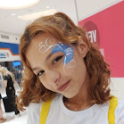

O projeto ConecTismo é uma rede social dedicada a apoiar pessoas com
Transtorno do Espectro Autista (TEA) na sua jornada profissional e pessoal. Nosso objetivo
é criar um ambiente inclusivo e acolhedor, onde indivíduos autistas possam compartilhar
experiências, adquirir conhecimentos, encontrar oportunidades de emprego e receber o
suporte necessário para prosperar no mercado de trabalho.
O projeto também está aliado as ODS da ONU.
Indivíduos autistas, familiares, amigos e profissionais/qualquer pessoa interessada em contribuir
para a causa podem se inscrever na plataforma da ConecTismo.
Olá, sou a Rebeca Fernandes, criadora do ConecTismo e estou muito feliz pela realização deste projeto!
O ConecTismo foi uma ideia que surgiu a partir de uma preocupação com o futuro e seu
acolhimento a pessoas neurodivergentes.
Mas... O que isso tem haver comigo?
Eu acabei me interessando pelo assunto da neurodivergencia em 2018, 1 ano após meu irmão mais novo
nascer, e durante esse ano, junto com a minha família começamos a perceber alguns sintomas em meu irmão
e fomos atrás de respostas.
Não demorou muito para o seu laudo de TEA sair e ficarmos mais aliviados de saber como cuidar dele, porém
outros medos vieram, os relacionados ao seu futuro e como as outras pessoas ao seu redor o tratariam.

.png)